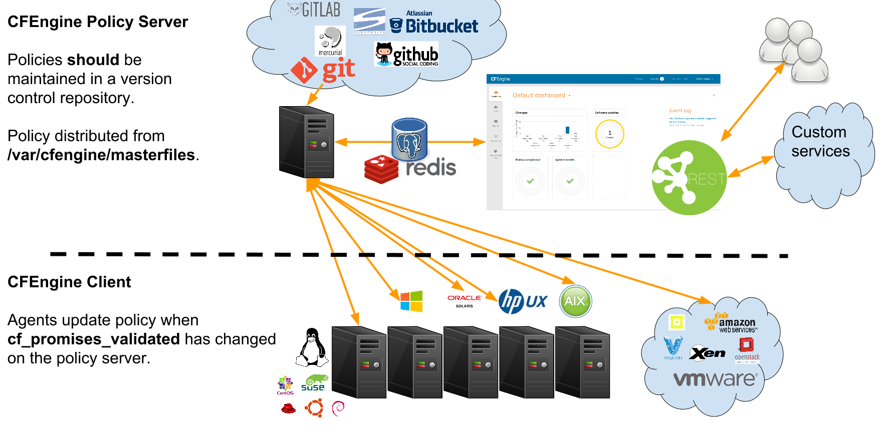

CFEngine in a day
Nick Anderson
Before we start
Schedule
A rough schedule (this varies greatly).
| Time | Activity |
|---|---|
| 09:00 AM - 10:30 AM | Class |
| 10:30 AM - 11:00 AM | Morning break |
| 11:00 AM - 12:30 PM | Class |
| 12:30 PM - 01:30 PM | Lunch break |
| 01:30 PM - 03:00 PM | Class |
| 03:00 PM - 03:30 PM | Afternoon break |
| 03:30 PM - 05:00 PM | Class |
Who will volunteer to remind me of breaks?
Use the source
The source materials for this presentation can be found on github.
See a mistake? Please consider submitting a Pull Request.
Hi, I'm Nick
- Wife, 2 kids and a dog
- Sysadmin/Infrastructure Engineer/Doer of things
- Find me online
Who are you?
- Name
- Role
- Goals for this training
Why Automation?
Every time someone logs onto a system by hand, they jeopardize everyone's understanding of the system. – Mark Burgess
What is CFEngine?
Modern, Secure, scale-able, and agile infrastructure automation tool designed to provide continuous operations using a distributed model based approach.
History
- Written by Mark Burgess
- Originally released in 1993.
- Computer Immunology (Self Healing) 1998
- CFEngine 2 (1998)
- Promise Theory (2005)
- CFEngine 3 (2008)
- Company Founded (2008)
- CFEngine 3.10 (2016)?
Small
As of October 2016:
- ~ 125k Lines of code
- ~ 20M Memory usage
- ~ 10M Package size
Secure
A good track record.
Portable
Known to run on many platforms, and interesting places.

Resilient

- Policy cached locally
- Decisions made locally
- Repair what you can and re-vist soon
Declarative

Focus on the desired end state.
- Focus on the GOAL
- Align with business priorities
Declarative vs Imperative
Strict Order of operations vs Goals/Way-points
Typical use cases
- Any local operation
- Manage files, processes, commands
- Compliance
- Security Hardening
- Application Deployment/Management
- Inventory
- What's possible?
Editions
Community (core)
wget -O- http://cfengine.package-repos.s3.amazonaws.com/\
quickinstall/quick-install-cfengine-community.sh | sudo bash
Enterprise Features
- Inventory Reporting
- Change Reporting
- Audit and Compliance
- Anomoly Detection
- Monitoring
- REST API
- SQL Reporting
- File Integrity Monitoring
Enterprise
wget http://cfengine.package-repos.s3.amazonaws.com/quickinstall/\
quick-install-cfengine-enterprise.sh
sudo bash ./quick-install-cfengine-enterprise.sh <hub|agent>
Client/Server Architecture

Client Server Communications
- Utilizes port 5308 for client – server communication
- Encrypted (TLS)
- SSH-like model (public/private keypair)
- Does not use complicated chains of trust
- Agents download policy from hub
- Hub downloads reports from remote agents
Agent Components
Agent Components

cf-hub

cf-hub
- Collect reports from remote agents
- Obeys "
common control" and "hub control" bodies
cf-runagent

cf-runagent
- Invokes cf-agent on remote hosts
- Normally run on the server to “ping” the clients
- Cannot invoke arbitrary commands - just wake up cf-agent
- Define classes to modify behavior
- Specify bundlesequence (
--remote-bundlesadded in 3.10)
cf-serverd

cf-serverd
- Listens for connections on TCP/5308
- Enforces access control and authentication
- Serves files
- Serves
cf-runagentrequests - Serves reports to
cf-hub - Runs on both server and clients
- Evaluates "
common" and "server" bundles - Obeys body "
server control"
cf-key

cf-key
- Show recent connections
- Manage trust of public keys
- Generates key pairs
- Installs Enterprise License
cf-promises

cf-promises
- Checks Syntax
- Performs pre-evaluation & discovery
- Dump Syntax
- Tag Policy Releases
- Show Variables
- Show Classes
Pro Tip: Syntax Checking
cf-promises --eval-functions=yes --full-check \
-f ./examples/00-01-hello_world.cf
- Full check requires
body common control(orbundle agent main). Typically this is only used when you run cf-promsies against promises.cf or update.cf
cf-promises -f ./examples/00-01-hello_world.cf
Build into your workflow!
- Editors
- vcs hooks
- build systems
cf-monitord

cf-monitord
- Collect system status information
- Provides information to
cf-agentthroughmon.*variables - Defines classes based on anomaly detection
- Evaluates "
common" and "monitor" bundles - Obeys "
common control" and "monitor control" bodies
cf-execd

cf-execd
- Executes
cf-agentperiodically - Controls period and splay time
- Collects, stores and sends output
- Evaluates "
common" bundles - Obeys "
executor control" body
cf-agent

cf-agent
- The Catalyst or instigator of change
- Evaluates "
agent" and "common" bundles - Obeys "
common control" and "agent control" bodies. - By default runs
/var/cfengine/inputs/promises.cf
Policy flow diagram

Pop Quiz
- What needs to happen before remote agents can get policy from the hub?
- Where is the policy that the agent runs by default?
- What port needs to be open bidirectionally?
- What is the meaning of life, the universe and everything?
Client/Server Checkpoint
- Any system can be a policy server
- Bootstrapping establishes trust relationship
- Policy server bootstraps to itself
- Agent runs locally cached policy in
/var/cfengine/inputs - Communicates over port
5308(tcp) - Agents downloads policy from server
- Hub downloads reports from remote agents
Language
- Promise Theory is a model of voluntary cooperation between individual autonomous actors.
- The fundamental underlying philosophy that CFEngine is based on.

Figure 15: Promise Theory Primcipals and Applications
Promises
- A promise is a statement of intent
- The webserver process promises to be running
- The file promises to have specific permissions
- An agent can only make promises about itself

Figure 16: Thinking in promises
Promise outcomes/results
keptrepairednot_keptfaileddeniedtimeout
Note: Compound promises can have multiple outcomes at the same time
(not_kept & kept).
Promise types
commands |
files |
services |
packages |
methods |
defaults |
meta |
classes |
reports |
vars |
databases |
guest_environments |
processes |
storage |
users |
access |
roles |
measurements |
There are many type of promises. The promise type available depend on the type of bundle used.
Anatomy of a promise
bundle type name { promise_type: context:: "promiser" -> { "optional", "stakeholder" } attribute_1 => value_1, attribute_2 => value_2, attribute_3 => value_3, attribute_n => value_n; }
Bundles
- Collection of promises grouped logically
- Can take parameters
- Maintain variable state
- Are not functions
Example bundles hold state
bundle agent main { methods: "" usebundle => set_item_in_bag( "hammer", "slightly damaged"); "" usebundle => set_item_in_bag( "pickaxe", "perfect"); "" usebundle => set_item_in_bag( "flask", "half full"); "" usebundle => report_bag_contents; } bundle agent set_item_in_bag(item, value) { vars: "$(item)" string => "$(value)"; } bundle agent report_bag_contents { vars: "l" slist => variablesmatching("default:set_item_in_bag\..*"); "a[$(l)]" string => nth( string_split( "$(l)", "\.", 2 ), 1); reports: "You look in the bag and see ...."; "A $($(l)) $(a[$(l)])"; }
R: You look in the bag and see .... R: A half full flask R: A slightly damaged hammer R: A perfect pickaxe
Bundles for logical abstraction
For example, a bundle to configure Apache might:
- install the
apache2package - edit the configuration file
- copy the web server content
- configure file-system permissions
- ensure the httpd process is running
- restart the httpd process when necessary
Bundle types
Bundles have a type which specify how they can be used.
Normal Order
- The order in which CFEngine executes promise types
- Classes then Vars are evaluated during policy parsing and pre-eval.
- Promises are evaluated from top to bottom respecting class restrictions
- Bundles listed in the bundlesequence or activated via methods are given 3 pass evaluation.
Bodies
- Collection of attributes
- Have a type ( e.g.
classes,perms,copy_from) - Can take parameters
- Can be inherited (3.8+)
- Cab be defaulted for a given promise type (3.9+)
There are MANY body types.
Pop Quiz
- What is a bundle?
- What is the fundamental underlying philosophy that CFEngine is based on?
- When is the next break?
- Which component collects reports from remote agents?
- What types of bundles are there?
Making Decisions: Context Classes and Expressions
Classes
- Restrict promises based on context.
- Usable in bundles and bodies
- Used for making decisions
- Can be combined with expressions
Show Classes
cf-promises --show-classes
| Class name Meta tags | | | | | | 127_0_0_1 inventory | attribute_name=none | source=agent | hardclass | | | 172_17_0_1 inventory | attribute_name=none | source=agent | hardclass | | | 4_cpus source=agent | derived-from=sys.cpus | hardclass | | | | 64_bit source=agent | hardclass | | | | | Day15 time_based | source=agent | hardclass | | | | Evening time_based | source=agent | hardclass | | | | GMT_Day16 time_based | source=agent | hardclass | | | | GMT_Hr03 time_based | source=agent | hardclass | | | | GMT_Hr03_Q2 time_based | source=agent | hardclass | | | | GMT_Hr3 time_based | source=agent | hardclass | | | | GMT_Lcycle_0 time_based | source=agent | hardclass | | | | GMT_Min15_20 time_based | source=agent | hardclass | | | | GMT_Min16 time_based | source=agent | hardclass | | | | GMT_Night time_based | source=agent | hardclass | | | | GMT_October time_based | source=agent | hardclass | | | | GMT_Q2 time_based | source=agent | hardclass | | | | GMT_Sunday time_based | source=agent | hardclass | | | | GMT_Yr2016 time_based | source=agent | hardclass | | | | Hr22 time_based | source=agent | hardclass | | | | Hr22_Q2 time_based | source=agent | hardclass | | | | Lcycle_0 time_based | source=agent | hardclass | | | | Min15_20 time_based | source=agent | hardclass | | | | Min16 time_based | source=agent | hardclass | | | | October time_based | source=agent | hardclass | | | | PK_SHA_43c979e264924d0b4a2d3b568d71ab8c768ef63487670f2c51cd85e8cec63834 inventory | attribute_name=none | source=agent | derived-from=sys.key_digest | hardclass | | Q2 time_based | source=agent | hardclass | | | | Saturday time_based | source=agent | hardclass | | | | Yr2016 time_based | source=agent | hardclass | | | | any source=agent | hardclass | | | | | cfengine inventory | attribute_name=none | source=agent | hardclass | | | cfengine_3 inventory | attribute_name=none | source=agent | hardclass | | | cfengine_3_9 inventory | attribute_name=none | source=agent | hardclass | | | cfengine_3_9_1 inventory | attribute_name=none | source=agent | hardclass | | | common cfe_internal | source=agent | hardclass | | | | compiled_on_linux_gnu source=agent | hardclass | | | | | debian inventory | attribute_name=none | source=agent | hardclass | | | debian_stretch inventory | attribute_name=none | source=agent | hardclass | | | enterprise inventory | attribute_name=none | source=agent | hardclass | | | enterprise_3 inventory | attribute_name=none | source=agent | hardclass | | | enterprise_3_9 inventory | attribute_name=none | source=agent | hardclass | | | enterprise_3_9_1 inventory | attribute_name=none | source=agent | hardclass | | | enterprise_edition inventory | attribute_name=none | source=agent | hardclass | | | feature source=agent | hardclass | | | | | feature_curl source=agent | hardclass | | | | | feature_def source=agent | hardclass | | | | | feature_def_json source=agent | hardclass | | | | | feature_def_json_preparse source=agent | hardclass | | | | | feature_xml source=agent | hardclass | | | | | feature_yaml source=agent | hardclass | | | | | have_aptitude inventory | attribute_name=none | source=agent | hardclass | | | ipv4_127 inventory | attribute_name=none | source=agent | hardclass | | | ipv4_127_0 inventory | attribute_name=none | source=agent | hardclass | | | ipv4_127_0_0 inventory | attribute_name=none | source=agent | hardclass | | | ipv4_127_0_0_1 inventory | attribute_name=none | source=agent | hardclass | | | ipv4_172 inventory | attribute_name=none | source=agent | hardclass | | | ipv4_172_17 inventory | attribute_name=none | source=agent | hardclass | | | ipv4_172_17_0 inventory | attribute_name=none | source=agent | hardclass | | | ipv4_172_17_0_1 inventory | attribute_name=none | source=agent | hardclass | | | linux inventory | attribute_name=none | source=agent | derived-from=sys.class | hardclass | | linux_4_4_0_43_generic source=agent | derived-from=sys.sysname | derived-from=sys.release | hardclass | | | linux_x86_64 source=agent | derived-from=sys.sysname | derived-from=sys.machine | hardclass | | | linux_x86_64_4_4_0_43_generic source=agent | derived-from=sys.sysname | derived-from=sys.machine | derived-from=sys.release | hardclass | | linux_x86_64_4_4_0_43_generic__63_Ubuntu_SMP_Wed_Oct_12_13_48_03_UTC_2016 source=agent | derived-from=sys.long_arch | hardclass | | | | mac_02_42_2d_73_e9_95 inventory | attribute_name=none | source=agent | hardclass | | | net_iface_docker0 source=agent | hardclass | | | | | net_iface_lo source=agent | hardclass | | | | | nickanderson_thinkpad_w550s source=agent | derived-from=sys.uqhost | hardclass | | | | nova inventory | attribute_name=none | source=agent | hardclass | | | nova_3 inventory | attribute_name=none | source=agent | hardclass | | | nova_3_9 inventory | attribute_name=none | source=agent | hardclass | | | nova_3_9_1 inventory | attribute_name=none | source=agent | hardclass | | | nova_edition source=agent | hardclass | | | | | systemd inventory | attribute_name=none | source=agent | hardclass | | | ubuntu inventory | attribute_name=none | source=agent | hardclass | | | ubuntu_16 inventory | attribute_name=none | source=agent | derived-from=sys.flavor | hardclass | | ubuntu_16_4 inventory | attribute_name=none | source=agent | hardclass | | | x86_64 source=agent | derived-from=sys.machine | hardclass | | |
Class expressions
| . (dot) | AND |
| & (ampersand) | AND |
| l (pipe) | OR |
| ! (exclamation) | NOT |
| () (parenthesis) | grouping |
- It's more common to use
.than&to express AND
classes example
bundle agent main { files: linux.(Sunday|Saturday):: "/etc/nologin" -> { "Human Resources" } create => "true", comment => "Disallow non-root logins on the weekend. We believe in work-life balance, and encourage it."; linux.!(Sunday|Saturday):: "/etc/nologin" -> { "Business Operations" } delete => tidy, comment => "People need to be able to log in for them to do their work during the week"; }
Class types
- Hard Classes
- Soft Classes
Hard classes
- Defined by agent
- Not configurable
- Always available
- Discovered each run
- Cannot be undefined
redhat, Thursday, linux
Soft classes
- Defined by policy
- Based on anything
- Available after definition
- Can persist for period of time
- Can be namespace or bundle scoped
- Can be undefined
webserver, prod_env, north_america
Valid Class names
- Allowed characters include
[a-zA-Z0-9_] - Canonify a string to produce a valid class name (by converting invalid
characters to
_). - Automatically canonified when defined
Note: Classes are NOT automatically canonified when checked.
Example of automatic canonification
bundle agent main { vars: "my_class_name" string => "Invalid-Class/Name!"; "c_my_class_name" string => canonify( "$(my_class_name)" ); classes: "$(my_class_name)" expression => "any"; reports: "'$(my_class_name)' is **NOT** a class that is defined" unless => "$(my_class_name)"; "'$(c_my_class_name)' **IS** a defined class" if => canonify( $(my_class_name) ); }
R: 'Invalid-Class/Name!' is **NOT** a class that is defined R: 'Invalid_Class_Name_' **IS** a defined class
Class scope
- Namespace scoped classes are accessible from any bundle.
- Persist until end of agent run or explicitly undefined.
- Bundle scoped classes are only accessible from within the bundle the class was defined.
- All hard classes are namespace scoped
Class scope rules
| Bundle Type | Scope |
common |
namespace |
agent |
bundle |
classesbodies default to namespace scope
Pro Tip: Use bundle scoped classes whenever possible.
Define custom classes by expression
bundle agent main { classes: "weekend" or => { "Saturday", "Sunday" }; "weekday" not => { "weekend" }; "business_hours" expression => "weekday.(Hr9|Hr10|Hr11|Hr13|Hr14|Hr15|Hr16|Hr17)", comment => "Weekdays from 9-5 excluding the lunch hour."; "webserver" expression => regcmp( "www.*", $(sys.fqhost) ), comment => "Identify webservers based on their name"; "north_america" expression => iprange( "10.1.0.0/16" ); }
Define custom classes by promise outcome
bundle agent main { vars: "config[PermitRootLogin]" string => "no"; files: "/etc/ssh/sshd_config" edit_line => set_line_based("$(this.bundle).config", " ", "\s+", ".*", "\s*#\s*"), classes => scoped_classes_generic("bundle", "sshd_config"); services: sshd_config_repaired:: "sshd" service_policy => "restart", comment => "For sshd to pick up changed config it must be restarted." }
Example - traditional class expressions
bundle agent main { reports: linux.!(Saturday|Sunday):: "This is a linux host"; "Today is not Saturday or Sunday"; }
Traditional class expressions apply until the next class expression, promise
type, or end of bundle. If unspecified promises are in the any context.
Example - ifvarclass
bundle agent main { vars: "platforms" slist => { "linux", "windows" }; reports: "I am a $(platforms) host" ifvarclass => "$(platforms)"; }
- Restrict individual promises
Example - if and unless
Better readability with if/unless
bundle agent main { vars: "platforms" slist => { "linux", "windows" }; reports: "I am a $(platforms) host" if => "$(platforms)"; "I was made by Microsoft" unless => "!windows"; }
Example - variable class expressions
More flexibility with variable class expressions
bundle agent main { vars: "platforms" slist => { "linux", "windows" }; reports: "$(platforms)":: "I am a $(platforms) host"; }
Pop Quiz
- What types of classes are there?
- What is the difference?
- What are valid class characters?
- What is the default scope for classes defined as the result of a promise outcome using a classes body?
Data Types
Variable Scoping
$(variable),@(list)- Use fully qualified variable names when accessing variables in other bundles.
$(bundle.variable),@(bundle.list)$(namespace:bundle.variable),@(namespace:bundle.list)
Example - strings
bundle agent main { vars: "string1" string => "one"; "string2" string => "strings can be multi-line"; "string3" string => "with \"quotes\""; "string4" string => 'or "quotes"'; reports: "string1 = '$(string1)'"; "string2 = '$(string2)'"; "string3 = '$(string3)'"; "string4 = '$(string4)'"; }
R: string1 = 'one' R: string2 = 'strings can be multi-line' R: string3 = 'with "quotes"' R: string4 = 'or "quotes"'
Example - numbers
bundle agent main { vars: "var1" int => "1"; "var2" int => "10K"; "var3" real => "1.2"; "var4" real => "10e-5"; "var5" int => "inf"; reports: "var1 = '$(var1)'"; "var2 = '$(var2)'"; "var3 = '$(var3)'"; "var4 = '$(var4)'"; "inf = '$(var5)'"; }
R: var1 = '1' R: var2 = '10240' R: var3 = '1.200000' R: var4 = '0.000100' R: inf = '999999999'
Example - lists
bundle agent main { vars: "var1" ilist => { 1, 2, "3", "4" }; "var2" rlist => { "1.2", "2.0", "3.3" }; "var3" slist => { "one", "two", three, @(var1), @(var2), }; "var4" real => sum( var2 ); reports: "var1 = '$(var1)'"; "var2 = '$(var2)'"; "var3 = '$(var3)'"; "var4 = '$(var4)'"; }
R: var1 = '1' R: var1 = '2' R: var1 = '3' R: var1 = '4' R: var2 = '1.2' R: var2 = '2.0' R: var2 = '3.3' R: var3 = 'one' R: var3 = 'two' R: var3 = 'three' R: var3 = '1' R: var3 = '2' R: var3 = '3' R: var3 = '4' R: var3 = '1.2' R: var3 = '2.0' R: var3 = '3.3' R: var4 = '6.500000'
Example - list iteration
bundle agent main { vars: "numbers" slist => { "1", "2", "3" }; "colors" slist => { "red", "green", "blue" }; reports: "$(numbers)"; "$(colors)"; "$(numbers) with $(colors)"; "$(colors) with $(numbers)"; }
R: 1 R: 2 R: 3 R: red R: green R: blue R: 1 with red R: 2 with red R: 3 with red R: 1 with green R: 2 with green R: 3 with green R: 1 with blue R: 2 with blue R: 3 with blue R: red with 1 R: green with 1 R: blue with 1 R: red with 2 R: green with 2 R: blue with 2 R: red with 3 R: green with 3 R: blue with 3
Example - "Classic" Arrays
bundle agent main { vars: "file[motd]" string => "/etc/motd"; "file[fstab]" string => "/etc/fstab"; "file_idx" slist => getindices( file ); "files" slist => getvalues( file ); reports: "The key '$(file_idx)' has the value '$(file[$(file_idx)])'"; "file: '$(files)'"; }
R: The key 'fstab' has the value '/etc/fstab' R: The key 'motd' has the value '/etc/motd' R: file: '/etc/fstab' R: file: '/etc/motd'
Example - data containers
bundle agent main { vars: "server" string => "mirror.int.cfengine.com"; "repos" data => parsejson('{ "rhel6_updates": { "id": { "value":"RHEL6_UPDATES" }, "name": { "value": "RHEL 6.x Updates" }, "baseurl": { "value": "https://$(server)/RHEL6/updates" } } }'); "idx" slist => getindices( repos ); reports: "URL = '$(repos[$(idx)][baseurl][value])'"; }
R: URL = 'https://mirror.int.cfengine.com/RHEL6/updates'
Pop Quiz
- Which component makes changes to your system?
- Which component schedules agent runs?
- What symbol terminates a promise?
- What is your quest?
- What are promise comments used for?
- What types of variables are available?
- How are decisions made?
Git Primer
Git
Git is the most popular modern version control management tool. Github, Bitbucket, and GitLab all provide great hosted and on prem repository management solutions.
Using a git management system is reccomended for implementing access controls and improved collaboration with regard to policy and systems management.
Getting started
Log into the policy server
[user@workstation] $ vagrant ssh hub [vagrant@hub] $ sudo -i
Configure git author
[root@hub masterfiles] # git config -–global user.name “Mr. Slate” [root@hub masterfiles] # git config -–global user.email “bossman@slateco.com” [root@hub masterfiles] # git config --global push.default simple
Clone builtin repository
[root@hub masterfiles] # git clone /opt/cfengine/masterfiles.git /vagrant/masterfiles Cloning into '/vagrant/masterfiles'...
Add a file to the repository
[root@hub masterfiles] # cd /vagrant/masterfiles [root@hub masterfiles] # ls cfe_internal Changelog controls def.cf lessons lib libraries promises.cf services sketches update update.cf [root@hub masterfiles] # echo hi > file [root@hub masterfiles] # git status # On branch master # Untracked files: # (use "git add <file>..." to include in what will be committed) # # file nothing added to commit but untracked files present (use "git add" to track)
Stage and commit the changes
[root@hub masterfiles] # git add file [root@hub masterfiles] # git status # On branch master # Changes to be committed: # (use "git reset HEAD <file>..." to unstage) # # new file: file # # git commit -m “Testing git workflow” [master c886caf] Testing git workflow 0 files changed, 0 insertions(+), 0 deletions(-) create mode 100644 file
Publish the change
[root@hub masterfiles] # git status # On branch master # Your branch is ahead of 'origin/master' by 1 commit. # nothing to commit (working directory clean) [root@hub masterfiles] # git push Counting objects: 4, done. Delta compression using up to 2 threads. Compressing objects: 100% (2/2), done. Writing objects: 100% (3/3), 280 bytes, done. Total 3 (delta 1), reused 0 (delta 0) Unpacking objects: 100% (3/3), done. To /opt/cfengine/masterfiles.git ee31801..94b8151 master -> master # git status # On branch master nothing to commit (working directory clean)
Modify a file
[root@hub masterfiles] # echo HI >> file [root@hub masterfiles] # git status # On branch master # Your branch is ahead of 'origin/master' by 1 commit. # # Changed but not updated: # (use "git add <file>..." to update what will be committed) # (use "git checkout -- <file>..." to discard changes in working directory) # # modified: file # no changes added to commit (use "git add" and/or "git commit -a")
Diff to validate detail of content change
[root@hub masterfiles] # git diff diff --git a/file b/file index 45b983b..313352b 100644 --- a/file +++ b/file @@ -1 +1,2 @@ hi +HI
Stage and commit the changes
[root@hub masterfiles] # git add file [root@hub masterfiles] # git status # On branch master # Your branch is ahead of 'origin/master' by 1 commit. # # Changes to be committed: # (use "git reset HEAD <file>..." to unstage) # # modified: file # # git commit -m "Modified file" [master fd94885] Modified file 1 files changed, 1 insertions(+), 0 deletions(-) # git status # On branch master # Your branch is ahead of 'origin/master' by 1 commits. # nothing to commit (working directory clean)
Publish the change
[root@hub masterfiles] # git push Counting objects: 7, done. Delta compression using up to 2 threads. Compressing objects: 100% (4/4), done. Writing objects: 100% (5/5), 493 bytes, done. Total 5 (delta 2), reused 0 (delta 0) Unpacking objects: 100% (5/5), done. To /opt/cfengine/masterfiles.git c886caf..fd94885 master -> master
Remove a file
[root@hub masterfiles] # git rm file # rm 'file' [root@hub masterfiles] # git status # On branch master # Changes to be committed: # (use "git reset HEAD <file>..." to unstage) # # deleted: file # # git commit -m "Remove file" [master 4c9d46d] Remove file 1 files changed, 0 insertions(+), 3 deletions(-) delete mode 100644 file
Publish the change
[root@hub masterfiles] # git push Counting objects: 3, done. Delta compression using up to 2 threads. Compressing objects: 100% (2/2), done. Writing objects: 100% (2/2), 230 bytes, done. Total 2 (delta 1), reused 0 (delta 0) Unpacking objects: 100% (2/2), done. To /opt/cfengine/masterfiles.git 92660a9..4c9d46d master -> master
Place masterfiles into the repository
[root@hub masterfiles] # rsync -avz /var/cfengine/masterfiles/ . [root@hub masterfiles] # git add -A [root@hub masterfiles] # git commit -m "Seed repository with masterfiles" [root@hub masterfiles] # git push
Configure masterfiles for git integration
[root@hub masterfiles]# echo '{ "classes": { "cfengine_internal_masterfiles_update": [ "policy_server" ] } }' > def.json
[root@hub masterfiles]# git add def.json
[root@hub masterfiles]# git commit -m "Enable automatic masterfiles update from repository"
[master c206654] Enable automatic masterfiles update from repository
1 file changed, 1 insertion(+)
create mode 100644 def.json
[root@hub masterfiles]# git push
warning: push.default is unset; its implicit value is changing in
Git 2.0 from 'matching' to 'simple'. To squelch this message
and maintain the current behavior after the default changes, use:
git config --global push.default matching
To squelch this message and adopt the new behavior now, use:
git config --global push.default simple
See 'git help config' and search for 'push.default' for further information.
(the 'simple' mode was introduced in Git 1.7.11. Use the similar mode
'current' instead of 'simple' if you sometimes use older versions of Git)
Counting objects: 4, done.
Delta compression using up to 2 threads.
Compressing objects: 100% (3/3), done.
Writing objects: 100% (3/3), 370 bytes | 0 bytes/s, done.
Total 3 (delta 1), reused 0 (delta 0)
To /opt/cfengine/masterfiles.git
a181449..c206654 master -> master
Activate current update policy with enablement class
[root@hub masterfiles]# cf-agent --no-lock \ --verbose \ --define cfengine_internal_masterfiles_update \ --file update.cf
Verify presence of def.json
[root@hub masterfiles]# cat /var/cfengine/masterfiles/def.json
Review
Now when the agent runs on hosts that define policy_server policy will be
activated that keeps /var/cfengine/masterfiles up to date with whats in the
repository as configured in mission portal (which by default is
/opt/cfengine/masterfiles.git).
This means new policy will be distributed as you push it into the repository. Continuous delivery FTW!
Git command reference
git status |
git pull --rebase |
git diff |
git grep |
git add |
git log |
git diff --cached |
git checkout -b new_feature |
git commit |
git push origin <branch> |
Pop Quiz
- Who was Mr. Slate?
- How do you get an overview of the changes to your clone?
- How can you easily search a git repository?
Examples and Exercises
Enable servicesautorun
[root@hub masterfiles]# cat > def.json <<EOF
{
"classes": {
"cfengine_internal_masterfiles_update": [
"policy_server"
],
"services_autorun": [ "any" ]
}
}
EOF
Inspect
[root@hub masterfiles]# git status # On branch master # Changes not staged for commit: # (use "git add <file>..." to update what will be committed) # (use "git checkout -- <file>..." to discard changes in working directory) # # modified: def.json # no changes added to commit (use "git add" and/or "git commit -a")
What you expect
[root@hub masterfiles]# git diff
diff --git a/def.json b/def.json
index 0b1c721..bf3b515 100644
--- a/def.json
+++ b/def.json
@@ -1 +1,8 @@
-{ "classes": { "cfengine_internal_masterfiles_update": [ "policy_server" ] } }
+{
+ "classes": {
+ "cfengine_internal_masterfiles_update": [
+ "policy_server"
+ ],
+ "services_autorun": [ "any" ]
+ }
+}
Publish the change
[root@hub masterfiles]# git add def.json [root@hub masterfiles]# git commit -m "Enable autorun" [master 7e57301] Enable autorun 1 file changed, 8 insertions(+), 1 deletion(-) [root@hub masterfiles]# git push origin master Counting objects: 5, done. Delta compression using up to 2 threads. Compressing objects: 100% (3/3), done. Writing objects: 100% (3/3), 364 bytes | 0 bytes/s, done. Total 3 (delta 1), reused 0 (delta 0) To /opt/cfengine/masterfiles.git c206654..7e57301 master -> master
Example - Create a file
Copy this example to services/autorun/nologin.cf
bundle agent no_login { meta: "tags" slist => { "autorun" }; files: "/etc/nologin" create => "true"; }
Example - update file
bundle agent cf_agent_heartbeat { meta: "tags" slist => { "autorun" }; files: "$(sys.statedir)/$(this.bundle)" -> { "Monitoring" } create => "true", touch => "true", classes => scoped_classes_generic("bundle", "heartbeat"), handle => "cf_agent_heartbeat_thump", comment => "This policy simply updates the timestamp of the file so an external monitoring system can validate the system is working."; reports: DEBUG|DEBUG_cf_agent_heartbeat:: "DEBUG $(this.bundle): Heartbeat" if => "heartbeat_repaired"; "DEBUG $(this.bundle): Flatline" unless => "heartbeat_repaired"; }
Exercise - create a file
Write a policy that ensures /etc/cron.allow is present so that only users
listed in the file are allowed to schedule jobs.
Test with crontab -e
Example - install a package and start a service
bundle agent training_simple_website { meta: host001:: "tags" slist => { "autorun" }; packages: "httpd" policy => "present", package_module => yum; services: "httpd" service_policy => "start"; reports: DEBUG|DEBUG_training_simple_website:: "DEBUG $(this.bundle)"; }
Example - Classify role based on hostname
bundle common classes_role_by_hostname { classes: "env_prod" meta => { "inventory", "attribute_name=Role Classes" }; or => { regcmp( "hub", $(sys.fqhost) ), regcmp( "^prd.*", $(sys.fqhost) ), }; "webserver" expression => "host001", meta => { "inventory", "attribute_name=Role Classes" }; "webserver" expression => regcmp( "^www.*", $(sys.fqhost) ), meta => { "inventory", "attribute_name=Role Classes" }; }
Example - Classify geographic location by network
bundle common classify_geo_location_by_network { meta: "tags" slist => { "autorun" }; vars: "nadc01_subnets" slist => { "172.16.25.0/25", "172.17.0.0/16", "192.168.33.2/32", }; "nadc02_subnets" slist => { "172.17.5.0/25", "172.42.0.0/16", "192.168.33.3/32", }; "sadc01_subnets" slist => { "172.19.4.0/23", "192.168.33.4-5" }; "continent" string => ifelse("north_america", "North America", "south_america", "South America", "Unknown"), meta => { "inventory", "attribute_name=Continent" };
classes: "north_america" or => { "nadc01", "nadc02" }; "south_america" expression => classmatch("^sadc\d+"); "nadc01" expression => iprange( $(nadc01_subnets) ); "nadc02" expression => iprange( $(nadc02_subnets) ); "sadc01" expression => iprange( $(sadc01_subnets) ); reports: "DEBUG|DEBUG_$(this.bundle)":: "DEBUG $(this.bundle): Continent = '$(continent)'"; }
Example - Manage key value entries in a config file
bundle agent manage_ssh { meta: "tags" slist => { "autorun" }; methods: "SSH Config Data" usebundle => ssh_config; "Manage SSH Config" usebundle => ssh_config_manage_kv("ssh_config.data"); }
bundle agent ssh_config { vars: "data[PermitRootLogin]" string => "no"; "data[Protocol]" string => "2"; "data[Port]" string => "22"; DEBUG|DEBUG_ssh_config:: "keys" slist => getindices(data); reports: DEBUG|DEBUG_ssh_config:: "DEBUG $(this.bundle): $(keys) = '$(data[$(keys)])'"; }
bundle agent ssh_config_manage_kv(data) { vars: "config" string => "/etc/ssh/sshd_config"; files: "$(config)" handle => "ssh_config_manage_kv_entries", edit_line => set_line_based("$(data)", " ", "\s+", ".*", "\s*#\s*"), classes => scoped_classes_generic("bundle", "sshd_config"); classes: sshd_config_repaired:: "config_valid" expression => returnszero("/usr/sbin/sshd -t -f $(config)", noshell), comment => "It's important that we don't restart the service with a broken config, or the service will be down."; commands: sshd_config_repaired.config_valid:: "$(paths.service)" handle => "ssh_config_manage_kv_restart_after_config_change", args => "sshd restart", comment => "The service must be restarted in order to pick up new configuration settings."; reports: "DEBUG $(this.bundle): Reparied configuration" if => "sshd_config_repaired"; "DEBUG $(this.bundle): Configuration Valid" if => "config_valid"; "DEBUG $(this.bundle): Restarted sshd after config change" depends_on => { "ssh_config_manage_kv_restart_after_config_change" }; }
Example - Manage key value entries output
[root@hub masterfiles]# cf-agent -KID DEBUG_ssh_config,DEBUG_ssh_config_manage_kv
info: Installing cfe_internal_non_existing_package...
R: DEBUG ssh_config: PermitRootLogin = 'no'
R: DEBUG ssh_config: Protocol = '2'
R: DEBUG ssh_config: Port = '22'
info: Edit file '/etc/ssh/sshd_config'
R: DEBUG ssh_config_manage_kv: Reparied configuration
info: Executing 'no timeout' ... '/sbin/service sshd restart'
notice: Q: "...in/service sshd": Stopping sshd: [ OK ]
Q: "...in/service sshd": Starting sshd: [ OK ]
info: Last 2 quoted lines were generated by promiser '/sbin/service sshd restart'
info: Completed execution of '/sbin/service sshd restart'
R: DEBUG ssh_config_manage_kv: Configuration Valid
R: DEBUG ssh_config_manage_kv: Restarted sshd after config change
Example - Templating a file
bundle agent motd { meta: "tags" slist => { "autorun" }; vars: "owner" string => "Bruce Wayne"; files: "/etc/motd" template_method => "mustache", edit_template => "$(this.promise_filename).mustache"; }
Example - mustache template
Welcome to {{{vars.sys.fqhost}}}!
For support issues please contact {{{vars.motd.owner}}}.
TODO Mustache Pro Tip: -top-
The -top- key is very useful for completely generic data models and debugging.
{{{%-top-}}}
Exercise - Edit a file
Write a policy that populates /etc/issue with legaleze.
Example - Enable sshd banner
Write a policy that enables the ssh banner and directs it to /etc/issue. sshd
should be restarted after changing its configuration.
Example - multiple outcomes
sudo touch /tmp/immutable sudo chatter +i /tmp/immutable
body file control { inputs => { "$(sys.libdir)/stdlib.cf" }; } bundle agent main { files: "/tmp/immutable" create => "true", edit_line => example_edit_line, classes => results("bundle", "my_id"); vars: "classes" slist => classesmatching(".*my_id.*"); reports: "Found Class = '$(classes)'"; } bundle edit_line example_edit_line { insert_lines: "I want to edit an immutable file"; }
error: Can't copy file permissions from '/tmp/immutable' to '/tmp/immutable.cf-after-edit' - so promised edits could not be moved into place. error: Unable to save file '/tmp/immutable' after editing R: Found Class = 'my_id_failed' R: Found Class = 'my_id_not_kept' R: Found Class = 'my_id_error' R: Found Class = 'my_id_kept' R: Found Class = 'my_id_reached'
Reference the implementation of the results classes body in the stdlib.
sudo chattr -i /tmp/immutable sudo rm /tmp/immutable
Exercise - Report
Write a policy that defines a name in separate parts (at least 3). Then have CFEngine report the name in a random order.
bundle agent main { vars: "name_parts" slist => { "Ronald", "Mck", "Donald" }; "shuffled" slist => shuffle( name_parts, randomint(0, inf) ); "name" string => join(" ", shuffled ); reports: "$(name)"; }
R: Donald Mck Ronald R: Donald Ronald Mck R: Ronald Donald Mck
Excercise - Trigger an action when a file changes
Write policy to monitor a file for change. When a change is seen report Winner
Winner Chicken Dinner. Manually edit the file, show how cfengine detects and
reports on the change.
Exercise - Automatically abort based on file presence
Write a policy that will abort cfengine execution if the file
$(sys.statedir)/abort_agent_execution exists.
- See abortclasses in the cfengine documentation
Exercise - Delete file based on age
Write a policy that will delete $(sys.statedir)/abort_agent_execution if it is
older than 1 hour.
Exercise - Kill a process
Write a policy to kill irssi running on webservers. No need for our webservers to be connected to IRC.
cp /bin/sleep /tmp/irssi /tmp/irssi 5000
MPF & stdlib
The "Default Masterfiles"
Overview
promises.cf- The main entry. This is the first file the agent reads by default. This is the stem cell for the rest of your policy.
update.cf- This is a seperate standalone policy to manage updating policy and the cfengine agent itself.
User Entries
def.jsonservices/main.cfservices/autorun/*.cfpromises.cfupdate.cf
Useful Tools and Tips
cf-locate
cf-locate- Command line tool to help locate and optionally display a body or bundle within a policy
Debug Reports
Use standardized DEBUG reports for policy development and troubleshooting.
bundle agent main { reports: DEBUG|DEBUG_this_bundle_name:: "DEBUG $(this.bundle): ...."; "DEBUG|DEBUG_$(this.bundle)":: "DEBUG $(this.bundle): ...."; }
Promise comments
Use promise comments to document WHY the promise is important.
bundle agent main { services: "firewalld" policy => "start", comment => "If this service isnt running, then we have unnecessary exposure and increase our risk of a security breach."; }
Getting the most from the documentation
Additional Resources
- VSA Training Material
- Self paced in depth tutorial based on Vertical Sysadmin training coursework
- Example Policy Layout
- An example policy layout
- CFEngine Spacemacs Layer
- The best editor is neither Emacs nor Vim, it's Emacs and Vim!
cf-locate- Find and optionally display body and bundle definitions within a policy set
cf-keycrypt- Tool to encrypt data with CFEngine public keys
- Allows to encrypt data for individual hosts using the public key
- Can be used with non host keys for "group" encryption
cf-profile- Displays time summaries from agent runs. Helps to find the bundles you spend the most time in.
vim_cf3- CFEngine 3 vim plugin with Syntax highlighting
reindent.pl- Re-indent CFEngine policy using this script that leverages the excellent cfengine3 mode in Emacs
- Sublime Text 3 CFEngine Beautifier
- Automatically reformat CFEngine policy in Sublime Text
- Sublime Text 3 Syntax Highlighter & Snippets
- CFEngine Syntax highlighting and snippets for Sublime Text
- (no term)
cfe-rsplaytimeCompute splaytime for a given hostcfe-profiler- Measures bundle execution time helping to uncover the most time consuming bundles.
More
Default bodies
- Default Bodies in language concepts
3.9 introduced the ability to define a body that is used by all occurances of a given promise type unless otherwise specified.
For example, to set all file type promises to warn you can add the
files_action body in the bodydefault namespace.
bundle agent main { files: "/tmp/show_default_action" create => "true"; "/tmp/show_explicit_action" create => "true", action => fix; } body action fix { action_policy => "fix"; } body file control { namespace => "bodydefault"; } body action files_action { action_policy => "warn"; }
warning: Warning promised, need to create file '/tmp/show_default_action'
Feature Macro
- Feature Macro documentation
You can conditionally parse policy based on compiled in features using this macro.
bundle agent main { @if feature(xml) # the yaml library may not be compiled in vars: "container" data => parseyaml(...); @endif }
Special Topics
Internal agent upgrade mechanism
- Place agent packages in
/var/cfengine/master_software_updates/$(sys.flavour)_$(sys.arch) Define
trigger_upgradefor set of hosts. Refupdate_def.cfclasses: "trigger_upgrade" or => { "host1", "host2", "redhat_5" };